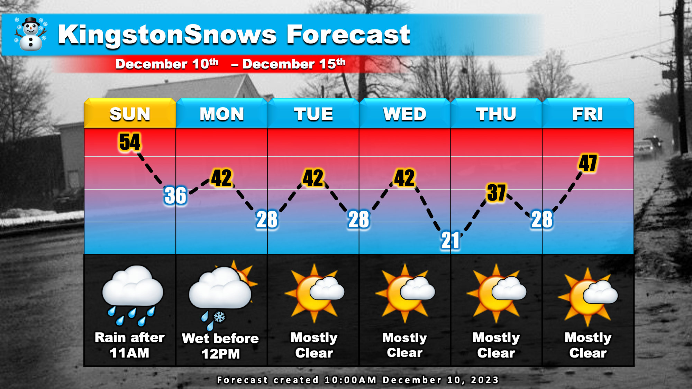

Steady rain moving in
School Forecast
for Monday December 11th
Last updated: 10:50AM Monday December 10, 2023
| 0% (Nope) |
|---|
| 0% (Nope) |
|---|
| 0% (Nope) |
|---|
___________________
A sprawling storm system is currently moving along the entire east coast. This storm will bring our area very wet weather over the next 24 hours. While the higher terrain outside of the Kingston area will likely see accumulating snow, here in Kingston mainly rain is expected.

As of 10:50AM, temperatures are currently around 51 degrees across the Kingston area. Temperatures may nudge up a few more degrees this afternoon. Current radar also reveals rain over central New York that should begin to push into our area over the next hour or so. Steady rain will fall this afternoon and overnight. Cold air on the back side of the storm will cause our temperatures to fall overnight. For much of eastern New York the cooler temperatures will be enough to change rain over to wet snow. However, here in the immediate Kingston area, temperatures will likely remain just above freezing. As a result, rain is expected. Between 2 and 3 inches of rain are likely. The storm will taper off around 10AM tomorrow. Once clouds clear by Monday night, clear calm weather is expected for the rest of the week.
During the last few hours of the storm, between about 6AM and 10AM, it is possible that temperatures in Kingston fall just enough to allow some wet snowflakes to fall. This could allow for a light coating on grassy surfaces and cars. However, given the wet ground, the marginal temperatures, and the short duration of any snowflakes, travel impacts related to snow are not anticipated in the immediate Kingston area.
Next Update:
Probably next Sunday
-Ethan
KingstonSnows | Kingston, New York
Website built by Ethan Burwell